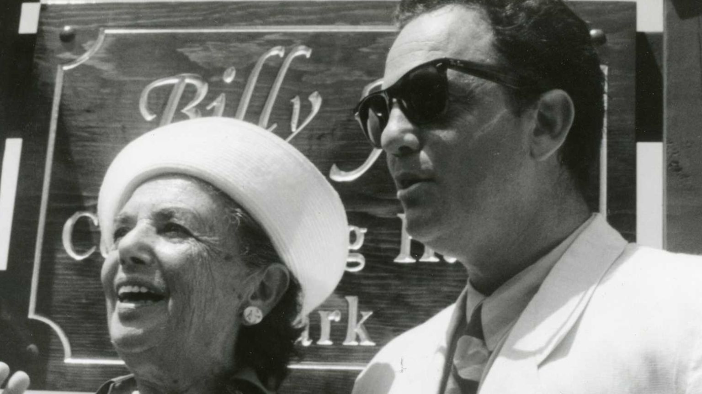
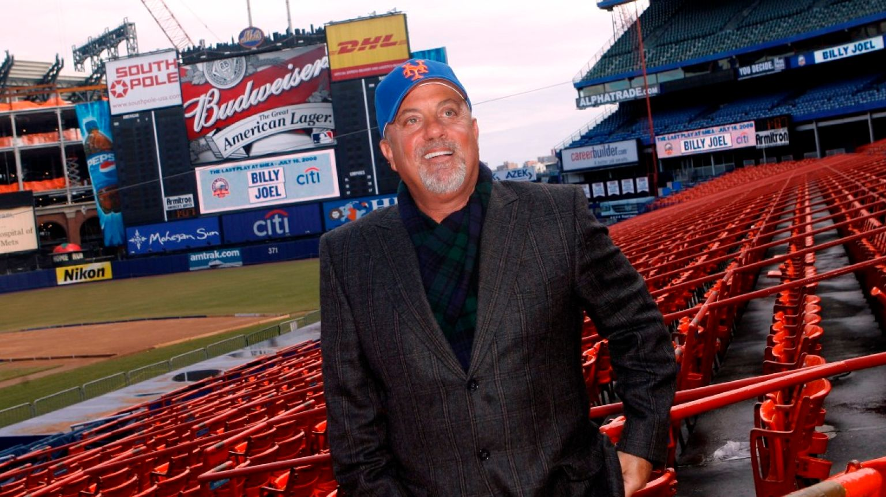
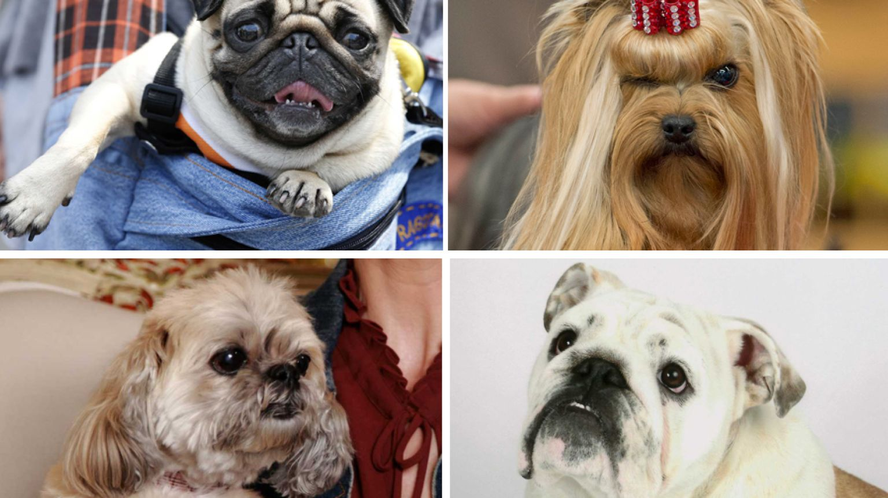
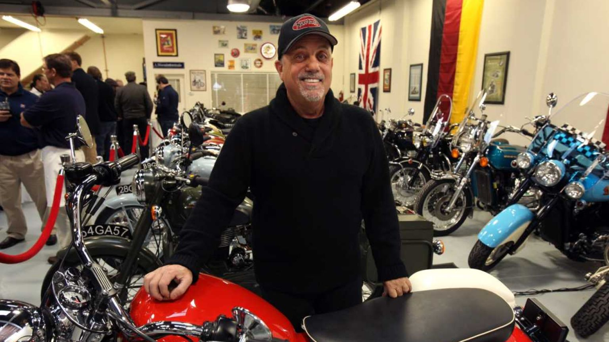
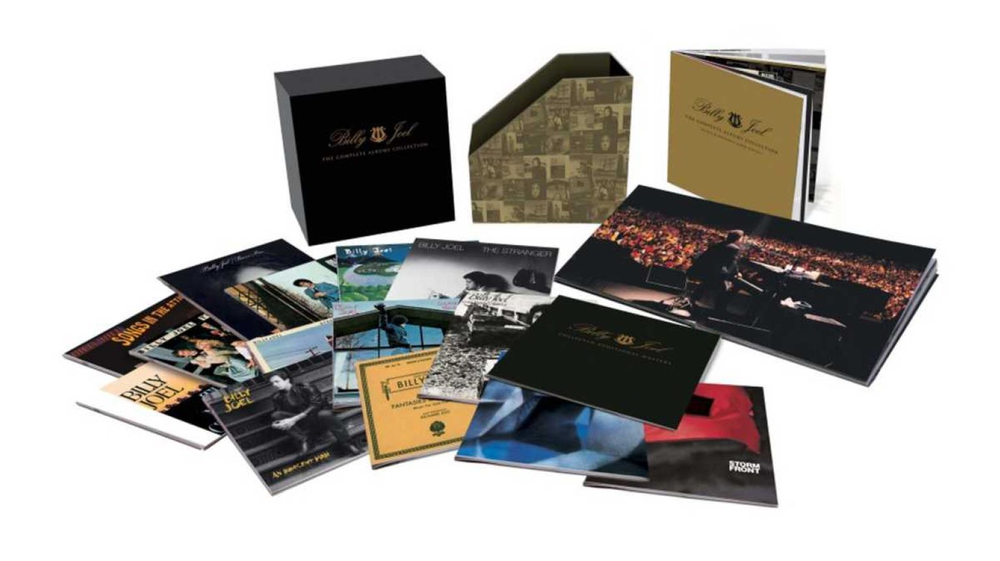

Which Billy Joel song was inspired by his mom?
When Billy closed Shea Stadium, what was the final song?
What's the breed of Billy's two dogs?
What is the name of Billy's motorcycle shop?
Which album does Billy consider his favorite?

Correct Answers:0
Incorrect Answers: 0